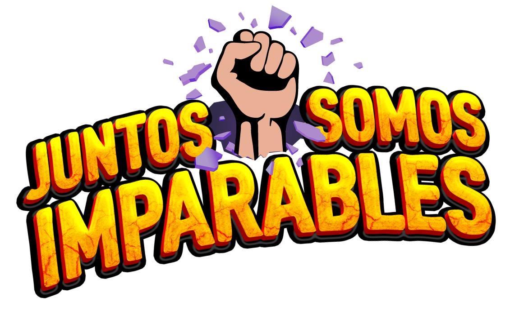

Áreas
Seleccione un área, o Colaborations OSA, para desplegar sus subprocesos y reportes.
Deslice hacia la derecha para seguir la ruta →
Glosario
Consulta de términos, indicadores y procesos de OSA Matrix.
Explora. Conecta. Descubre.
Conoce los reportes de OSA Matrix y navega por las diferentes áreas y subprocesos para encontrar la información que impulsa tus decisiones.

Seleccione un área, o Colaborations OSA, para desplegar sus subprocesos y reportes.